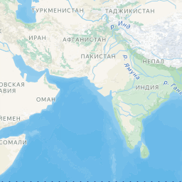
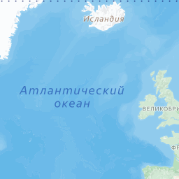
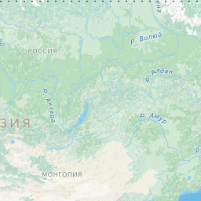
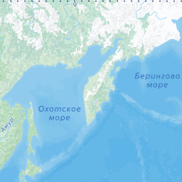
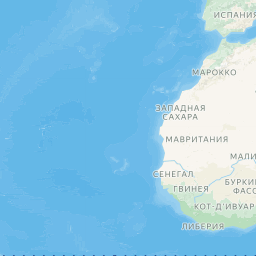
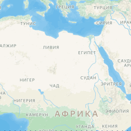
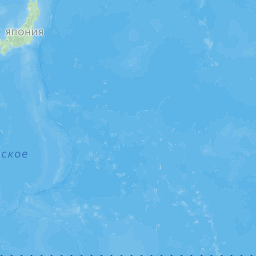

<div class="handoff-block" data-handoff-block="04-node-section-0" data-block-kind="catalog-map"><div ><div class="layout" data-v-47bd53e9=""><main class="layout__content" data-v-47bd53e9=""><div class="page catalog" data-v-f0be9abb=""><div id="catalog-map" class="catalog-page-section" data-v-f0be9abb=""><section class="catalog-map" aria-label="Карта объектов" data-v-f0be9abb="" data-v-4e8b332d="" id="node-section-0"><div class="base-container" data-v-4e8b332d=""><div class="catalog-map__header" data-v-4e8b332d=""><p class="catalog-section-eyebrow">География</p><h2 class="catalog-map__title" data-v-4e8b332d="">Проекты на карте</h2><p class="catalog-map__text barn-estate-name" data-v-4e8b332d="">На карте собраны объекты коммерческой недвижимости из портфеля BARN&nbsp;Estate. Смотрите расположение объектов, сравнивайте локации и выбирайте недвижимость с учетом назначения и целей покупки.</p></div><div data-v-25437794="" data-v-4e8b332d="" class="catalog-projects-map" data-capture-width="1288"><div data-v-25437794="" class="__ymap catalog-projects-map__canvas" style="width: 100%; height: 100%; z-index: 0;"><div class="__ymap_container"><ymaps3 class="ymaps3--map-container"><ymaps3 class="ymaps3--map" style="width: 1151px; height: 220px; touch-action: none;"><ymaps3 class="ymaps3--main-engine-container"><ymaps3><ymaps3 class="ymaps3--layer ymaps3--tile-layer" style="opacity: 1; perspective: 410.526px;"><ymaps3 class="ymaps3--tile-layer__container" data-z="3" style="transform: rotateX(0rad) translate3d(0px, 0px, 0px) rotateZ(0rad) translate3d(0.234375px, 0px, 0px); z-index: 3;"></ymaps3></ymaps3></ymaps3></ymaps3><ymaps3 class="ymaps3--top-engine-container"><ymaps3><ymaps3 class="ymaps3--layer ymaps3--graphics-layer" style="opacity: 1; perspective: 410.526px;"></ymaps3><ymaps3 class="ymaps3--layer ymaps3--marker-layer" style="opacity: 1; transform-origin: 574.5px 110px;"><ymaps3 class="ymaps3--marker" style="transform: translate(794.5px, 154px); z-index: 0;"><div class="__ymap-marker" style="width: 0px; height: 0px;"><div class="__ymap-marker_wrapper" style="transform: translate(-50%, -100%); width: fit-content;"><div data-v-25437794="" class="catalog-projects-map__pin" style="width: 16px; height: 16px; border-radius: 50%; background: rgb(147, 31, 43); border: 2px solid rgb(255, 255, 255); box-shadow: rgb(147, 31, 43) 0px 0px 0px 2px; cursor: pointer;"></div></div></div></ymaps3><ymaps3 class="ymaps3--marker" style="transform: translate(400.5px, 82px); z-index: 0;"><div class="__ymap-marker" style="width: 0px; height: 0px;"><div class="__ymap-marker_wrapper" style="transform: translate(-50%, -50%); width: fit-content;"><button data-v-25437794="" type="button" class="catalog-projects-map__cluster" style="width: 44px; height: 44px; border-radius: 50%; background: rgb(147, 31, 43); border: 2px solid rgb(255, 255, 255); box-shadow: rgb(147, 31, 43) 0px 0px 0px 2px; color: rgb(255, 255, 255); cursor: pointer;">824</button></div></div></ymaps3><ymaps3 class="ymaps3--marker" style="transform: translate(399.5px, 80px); z-index: 0;"><div class="__ymap-marker" style="width: 0px; height: 0px;"><div class="__ymap-marker_wrapper" style="transform: translate(-50%, -50%); width: fit-content;"><button data-v-25437794="" type="button" class="catalog-projects-map__cluster" style="width: 44px; height: 44px; border-radius: 50%; background: rgb(147, 31, 43); border: 2px solid rgb(255, 255, 255); box-shadow: rgb(147, 31, 43) 0px 0px 0px 2px; color: rgb(255, 255, 255); cursor: pointer;">9</button></div></div></ymaps3><ymaps3 class="ymaps3--marker" style="transform: translate(413.5px, 182px); z-index: 0;"><div class="__ymap-marker" style="width: 0px; height: 0px;"><div class="__ymap-marker_wrapper" style="transform: translate(-50%, -50%); width: fit-content;"><button data-v-25437794="" type="button" class="catalog-projects-map__cluster" style="width: 44px; height: 44px; border-radius: 50%; background: rgb(147, 31, 43); border: 2px solid rgb(255, 255, 255); box-shadow: rgb(147, 31, 43) 0px 0px 0px 2px; color: rgb(255, 255, 255); cursor: pointer;">5</button></div></div></ymaps3><ymaps3 class="ymaps3--marker" style="transform: translate(359.5px, 39px); z-index: 0;"><div class="__ymap-marker" style="width: 0px; height: 0px;"><div class="__ymap-marker_wrapper" style="transform: translate(-50%, -50%); width: fit-content;"><button data-v-25437794="" type="button" class="catalog-projects-map__cluster" style="width: 44px; height: 44px; border-radius: 50%; background: rgb(147, 31, 43); border: 2px solid rgb(255, 255, 255); box-shadow: rgb(147, 31, 43) 0px 0px 0px 2px; color: rgb(255, 255, 255); cursor: pointer;">19</button></div></div></ymaps3></ymaps3></ymaps3></ymaps3></ymaps3><ymaps3 class="ymaps3--controls ymaps3--controls_center ymaps3--controls_right ymaps3--controls_vertical"><ymaps3 class="ymaps3--control ymaps3--control__background"><ymaps3 class="ymaps3--zoom-control ymaps3--zoom-control_vertical"><button class="ymaps3--button ymaps3--control-button" type="button"><ymaps3 class="ymaps3--zoom-control__in"></ymaps3></button><button class="ymaps3--button ymaps3--control-button" type="button"><ymaps3 class="ymaps3--zoom-control__out"></ymaps3></button></ymaps3></ymaps3></ymaps3><ymaps3 class="ymaps3--map-copyrights ymaps3--map-copyrights_bottom ymaps3--map-copyrights_right"><ymaps3 class="ymaps3--map-copyrights__container"><ymaps3 class="ymaps3--map-copyrights__text" title="© Яндекс">© Яндекс</ymaps3><a class="ymaps3--map-copyrights__user-agreements" target="_blank" href="https://yandex.ru/legal/maps_termsofuse/?lang=ru_RU">Условия использования</a></ymaps3><a class="ymaps3--map-copyrights__logo ymaps3--icon-logo-ru-black" href="https://yandex.ru/maps/?from=api-maps&amp;utm_source=jsapi&amp;ll=37.61842300000002%2C55.75124399999371&amp;origin=jsapi_3&amp;z=11&amp;l=map"></a><ymaps3 class="ymaps3--map-copyrights__scale" style="bottom: 40px;"></ymaps3></ymaps3><ymaps3 class="ymaps3--controls ymaps3--controls_bottom ymaps3--controls_left ymaps3--controls_horizontal"><ymaps3 class="ymaps3--control ymaps3--control__background"><button class="ymaps3--button ymaps3--control-button" type="button"><ymaps3 class="ymaps3--open-maps-button">Открыть Яндекс Карты</ymaps3></button></ymaps3></ymaps3></ymaps3></div><div class="__ymap_slots" style="display: none;"><!----><!----><!----><div data-v-25437794=""></div><!----></div></div><!----><div data-v-25437794="" class="catalog-projects-map__controls"><label data-v-25437794="" class="catalog-projects-map__search"><span data-v-8bd2f545="" data-v-25437794="" class="ui-icon ui-icon-current catalog-projects-map__search-icon"><svg xmlns="http://www.w3.org/2000/svg" width="20" height="20" viewBox="0 0 24 24" fill="none" stroke="currentColor" stroke-width="1.5" stroke-linecap="round" stroke-linejoin="round">
  <circle cx="11" cy="11" r="7"></circle>
  <path d="m20 20-3.5-3.5"></path>
</svg>
</span><input data-v-25437794="" type="search" class="catalog-projects-map__search-input" placeholder="Поиск в видимой области" autocomplete="off" style="" aria-label="Поиск в видимой области карты"></label><button data-v-25437794="" type="button" class="catalog-projects-map__fullscreen"><svg data-v-25437794="" class="catalog-projects-map__fullscreen-icon" width="20" height="20" viewBox="0 0 24 24" fill="none" xmlns="http://www.w3.org/2000/svg" aria-hidden="true"><path data-v-25437794="" d="M8 3H5a2 2 0 0 0-2 2v3M16 3h3a2 2 0 0 1 2 2v3M8 21H5a2 2 0 0 1-2-2v-3M16 21h3a2 2 0 0 0 2-2v-3" stroke="currentColor" stroke-width="1.5" stroke-linecap="round" stroke-linejoin="round"></path></svg> На весь экран</button></div><!----></div></div></section></div></div></main></div></div></div>
